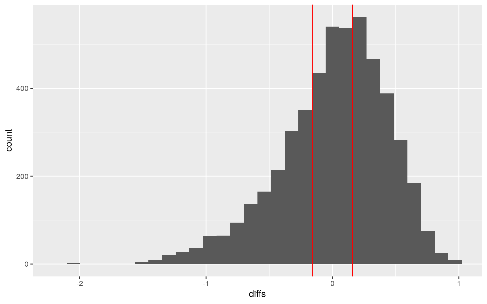
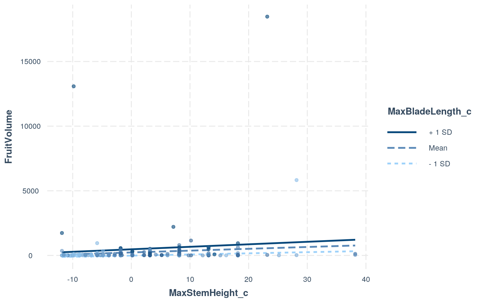
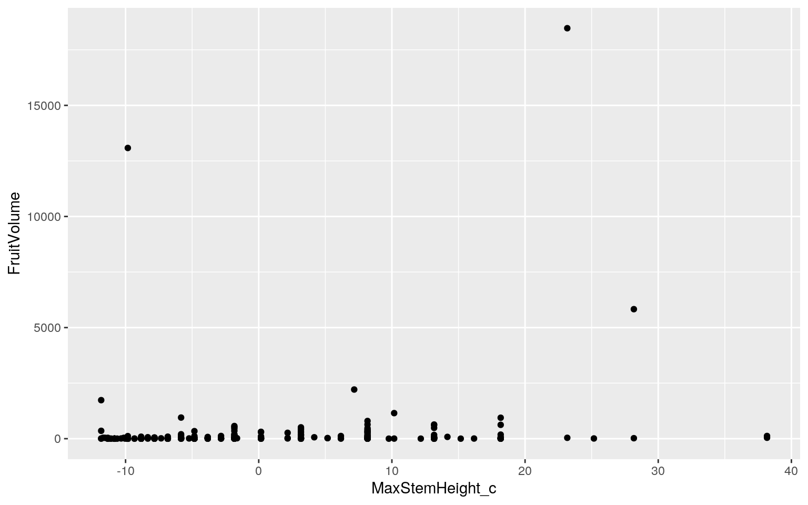
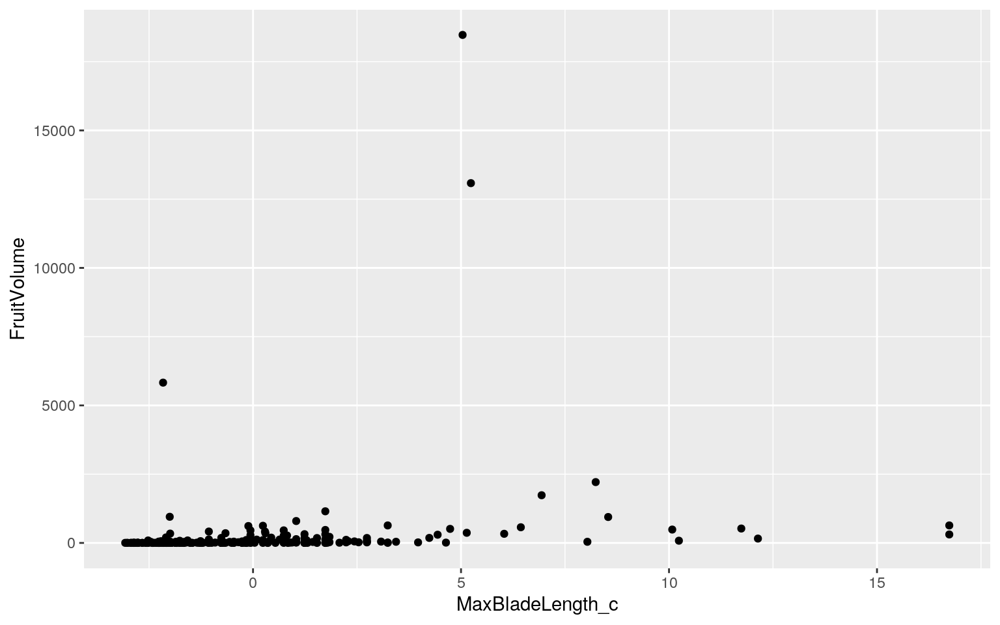
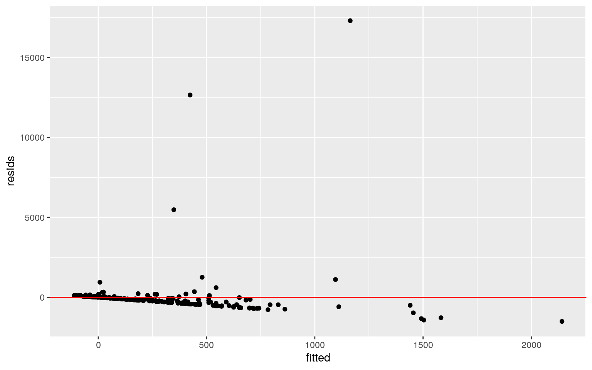
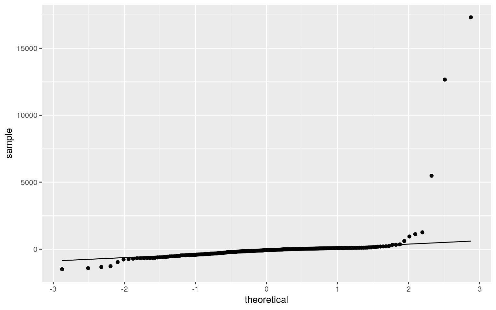
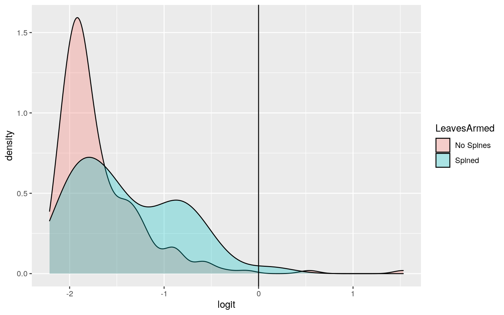
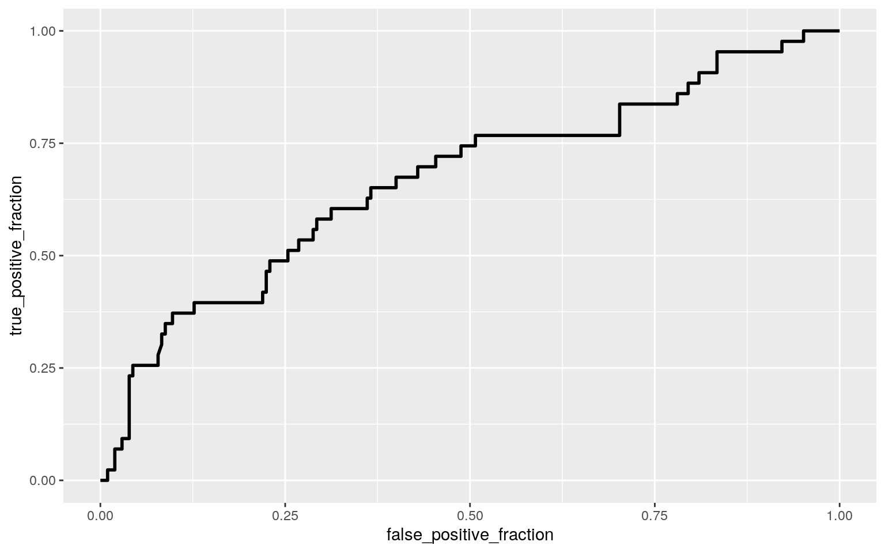

The dataset I will be using consists of observations collected on 2557 species of palm tree collected from all over the globe, but only 245 of these species have data for all parameters. The data includes details about each species, broken down into a few "groupings". These are the stems, leaves, and fruit. The stems are described as either erect, climbing, or acaulescent, and measurements of spine branching, height, and diameter are taken. The leaves are describe dusing the number of leaves and measurements of length and width. Finally, the fruits are described by their size in all dimensions and color.
palmData <- read_csv("~/content/palmData.csv")
data <- palmData %>% select(c(6:26, 29)) %>% na.omit %>% select(c(-UnderstoreyCanopy, -MinFruitLength_cm, -MaxFruitLength_cm, -MinFruitWidth_cm, -MaxFruitWidth_cm))
head(data)## # A tibble: 6 x 17
## Climbing Acaulescent Erect StemSolitary StemArmed
LeavesArmed MaxStemHeight_m MaxStemDia_cm
## <dbl> <dbl> <dbl> <dbl> <dbl> <dbl> <dbl> <dbl>
## 1 0 0 1 1 0 0 9 9
## 2 0 0 1 1 1 1 18 50
## 3 0 0 1 1 0 0 30 30
## 4 0 0 1 1 0 0 22 30
## 5 0 0 1 1 0 0 20 30
## 6 0 0 1 1 0 0 25 45
## # … with 9 more variables: MaxLeafNumber <dbl>,
Max_Blade_Length_m <dbl>,
## # Max_Rachis_Length_m <dbl>, Max_Petiole_length_m <dbl>,
AverageFruitLength_cm <dbl>,
## # AverageFruitWidth_cm <dbl>, FruitSizeCategorical
<chr>, FruitShape <chr>, Conspicuousness <chr>man <- manova(cbind(MaxStemHeight_m, MaxStemDia_cm, MaxLeafNumber, Max_Blade_Length_m, Max_Rachis_Length_m, Max_Petiole_length_m, AverageFruitLength_cm, AverageFruitWidth_cm)~Erect, data = data)
summary(man)## Df Pillai approx F num Df den Df Pr(>F)
## Erect 1 0.13533 4.6759 8 239 2.476e-05 ***
## Residuals 246
## ---
## Signif. codes: 0 '***' 0.001 '**' 0.01 '*' 0.05 '.' 0.1
' ' 1We reject the null hypothesis and find that one of the numeric variables does differ across levels of stem erect status (p = 2.476e-5).
summary.aov(man)## Response MaxStemHeight_m :
## Df Sum Sq Mean Sq F value Pr(>F)
## Erect 1 21.8 21.789 0.2297 0.6322
## Residuals 246 23337.5 94.868
##
## Response MaxStemDia_cm :
## Df Sum Sq Mean Sq F value Pr(>F)
## Erect 1 1456 1455.74 6.0924 0.01426 *
## Residuals 246 58780 238.94
## ---
## Signif. codes: 0 '***' 0.001 '**' 0.01 '*' 0.05 '.' 0.1
' ' 1
##
## Response MaxLeafNumber :
## Df Sum Sq Mean Sq F value Pr(>F)
## Erect 1 383.4 383.43 4.597 0.03301 *
## Residuals 246 20518.7 83.41
## ---
## Signif. codes: 0 '***' 0.001 '**' 0.01 '*' 0.05 '.' 0.1
' ' 1
##
## Response Max_Blade_Length_m :
## Df Sum Sq Mean Sq F value Pr(>F)
## Erect 1 29.56 29.5602 3.2347 0.07332 .
## Residuals 246 2248.06 9.1384
## ---
## Signif. codes: 0 '***' 0.001 '**' 0.01 '*' 0.05 '.' 0.1
' ' 1
##
## Response Max_Rachis_Length_m :
## Df Sum Sq Mean Sq F value Pr(>F)
## Erect 1 15.72 15.7204 2.733 0.09957 .
## Residuals 246 1415.00 5.7521
## ---
## Signif. codes: 0 '***' 0.001 '**' 0.01 '*' 0.05 '.' 0.1
' ' 1
##
## Response Max_Petiole_length_m :
## Df Sum Sq Mean Sq F value Pr(>F)
## Erect 1 5.139 5.1392 6.3228 0.01256 *
## Residuals 246 199.950 0.8128
## ---
## Signif. codes: 0 '***' 0.001 '**' 0.01 '*' 0.05 '.' 0.1
' ' 1
##
## Response AverageFruitLength_cm :
## Df Sum Sq Mean Sq F value Pr(>F)
## Erect 1 17.15 17.1504 2.7513 0.09845 .
## Residuals 246 1533.43 6.2335
## ---
## Signif. codes: 0 '***' 0.001 '**' 0.01 '*' 0.05 '.' 0.1
' ' 1
##
## Response AverageFruitWidth_cm :
## Df Sum Sq Mean Sq F value Pr(>F)
## Erect 1 23.18 23.1797 7.0145 0.008608 **
## Residuals 246 812.91 3.3045
## ---
## Signif. codes: 0 '***' 0.001 '**' 0.01 '*' 0.05 '.' 0.1
' ' 1The univariate ANOVA tests indicate that the average fruit width, max stem diameter, max petiole length, and max leaf number differ across levels of stem erect status.
pairwise.t.test(data$MaxStemDia_cm, data$Erect, p.adj = "none")##
## Pairwise comparisons using t tests with pooled SD
##
## data: data$MaxStemDia_cm and data$Erect
##
## 0 1
## 1 0.0072 -
## 2 0.2545 0.9995
##
## P value adjustment method: nonepairwise.t.test(data$AverageFruitWidth_cm, data$Erect, p.adj = "none")##
## Pairwise comparisons using t tests with pooled SD
##
## data: data$AverageFruitWidth_cm and data$Erect
##
## 0 1
## 1 0.73 -
## 2 2.6e-07 5.4e-08
##
## P value adjustment method: nonepairwise.t.test(data$Max_Petiole_length_m, data$Erect, p.adj = "none")##
## Pairwise comparisons using t tests with pooled SD
##
## data: data$Max_Petiole_length_m and data$Erect
##
## 0 1
## 1 0.0062 -
## 2 0.2474 0.9957
##
## P value adjustment method: nonepairwise.t.test(data$MaxLeafNumber, data$Erect, p.adj = "none")##
## Pairwise comparisons using t tests with pooled SD
##
## data: data$MaxLeafNumber and data$Erect
##
## 0 1
## 1 0.0015 -
## 2 0.8241 0.0877
##
## P value adjustment method: noneSo far, I have done 1 MANOVA, 8 univariate ANOVA's, and 12 t-tests. If I were to use p < 0.05 to evaluate significance, there is a 65.94% chance of making a type-I error. Using a bonferroni correction, I will instead be using p < 0.00238 for evaluating significance in the t-tests.
Thus the average of average fruit width for species with erect stems differs from that of species that can have either type of stem (p = 5.4e-8). In addition, the average of average fruit width for species without erect stems also differs from species that can have either type of stem (p = 2.6e-7). The last significant difference was for max leaf number between species that have erect stems and those that do not (p = 0.0015).
library(rstatix)
group <- data$Erect[data$Erect != 2]
DVs <- data %>% filter(Erect != 2) %>% select(c(7:14))
head(data)## # A tibble: 6 x 17
## Climbing Acaulescent Erect StemSolitary StemArmed
LeavesArmed MaxStemHeight_m MaxStemDia_cm
## <dbl> <dbl> <dbl> <dbl> <dbl> <dbl> <dbl> <dbl>
## 1 0 0 1 1 0 0 9 9
## 2 0 0 1 1 1 1 18 50
## 3 0 0 1 1 0 0 30 30
## 4 0 0 1 1 0 0 22 30
## 5 0 0 1 1 0 0 20 30
## 6 0 0 1 1 0 0 25 45
## # … with 9 more variables: MaxLeafNumber <dbl>,
Max_Blade_Length_m <dbl>,
## # Max_Rachis_Length_m <dbl>, Max_Petiole_length_m <dbl>,
AverageFruitLength_cm <dbl>,
## # AverageFruitWidth_cm <dbl>, FruitSizeCategorical
<chr>, FruitShape <chr>, Conspicuousness <chr>#Shapiro-Wilk test for multivariate normality
sapply(split(DVs,group), mshapiro_test)## 0 1
## statistic 0.5046329 0.7058936
## p.value 3.8342e-06 7.520122e-20#Box's M test (null: assumption met)
box_m(DVs, group)## # A tibble: 1 x 4
## statistic p.value parameter method
## <dbl> <dbl> <dbl> <chr>
## 1 146. 3.12e-15 36 Box's M-test for Homogeneity of
Covariance MatricesWe reject the null hypothesis and find that the data do not exhibit multivariate normality (p < 0.05). We reject the null hypothesis and find that the covariance matrices are not homogenous (p < 0.05).
Here I test the difference in means of the Average Fruit Width based on if the species has an erect stem or not.
random <- data.frame(Erect = data$Erect, AverageFruitWidth = data$AverageFruitWidth_cm) %>% filter(Erect == 0 | Erect == 1)
true_mean <- random %>% group_by(Erect) %>% summarize_all(mean) %>% pull %>% diff #true mean differences
true_mean## [1] 0.1590325set.seed(1)
mean_diff <- NULL
for(i in 1:5000){
samp <- data.frame(erect = sample(random$Erect), FruitWidth = random$AverageFruitWidth)
mean_diff[i] <- mean(samp[samp$erect == 1,]$FruitWidth) - mean(samp[samp$erect == 0,]$FruitWidth)
}
mean(mean_diff > 0.1590325 | mean_diff < -0.1590325) # p-value## [1] 0.7034data.frame(diffs = mean_diff) %>% ggplot(aes(x = diffs)) + geom_histogram() + geom_vline(xintercept = c(true_mean, -true_mean), color = "red") H0: The mean average fruit width does not differ between species with erect stems and species without erect stems.
H1: The mean average fruit width does differ between species with erect stems and species without erect stems.
We fail to reject the null hypothesis and conclude that there is no difference in the mean average fruit width between species that have erect stems and those that do not (p = 0.7034).
Here I see if there is a correlation between leaf blade length and stem height with the volume of the fruit.
data <- data %>% mutate(FruitVolume = 4 / 3 * pi * AverageFruitLength_cm * AverageFruitWidth_cm^2, MaxBladeLength_c = Max_Blade_Length_m - mean(Max_Blade_Length_m), MaxStemHeight_c = MaxStemHeight_m - mean(MaxStemHeight_m))
lm <- lm(FruitVolume ~ MaxBladeLength_c * MaxStemHeight_c, data = data)
summary(lm)##
## Call:
## lm(formula = FruitVolume ~ MaxBladeLength_c *
MaxStemHeight_c,
## data = data)
##
## Residuals:
## Min 1Q Median 3Q Max
## -1505.4 -299.2 -75.9 41.0 17309.1
##
## Coefficients:
## Estimate Std. Error t value Pr(>|t|)
## (Intercept) 230.582 101.271 2.277 0.0237 *
## MaxBladeLength_c 80.357 35.373 2.272 0.0240 *
## MaxStemHeight_c 14.097 10.385 1.358 0.1759
## MaxBladeLength_c:MaxStemHeight_c 1.726 3.635 0.475
0.6354
## ---
## Signif. codes: 0 '***' 0.001 '**' 0.01 '*' 0.05 '.' 0.1
' ' 1
##
## Residual standard error: 1459 on 244 degrees of freedom
## Multiple R-squared: 0.05165, Adjusted R-squared: 0.03999
## F-statistic: 4.43 on 3 and 244 DF, p-value: 0.00471For palm species with average leaf blade length and stem height, the average volume of the fruit is 230.582 cm^3. For every one meter increase in leaf blade length, there is a predicted increase in fruit volume by 80.357 cm^3. For every one meter increase in stem height, there is a predicted increase in fruit volume by 14.097 cm^3. For every one meter increase in leaf blade length, the slope of stem height on fruit volume increases by 1.726 cm^3/m.
library(interactions)
interact_plot(lm, pred = MaxStemHeight_c, modx = MaxBladeLength_c, plot.points = TRUE)
#Linearity
ggplot(data, aes(MaxStemHeight_c, FruitVolume)) + geom_point()
ggplot(data, aes(MaxBladeLength_c, FruitVolume)) + geom_point()
#homoskedasticity
fitted <- lm$fitted.values
resids <- lm$residuals
ggplot() + geom_point(aes(fitted, resids)) + geom_hline(yintercept = 0, color = "red")
#normality
ggplot() + geom_qq(aes(sample = resids)) + geom_qq_line(aes(sample = resids)) Analyzing the graphs seems to indicate that the model violates all assumptions. The variables are not linearly correlated, the residual plot shows that larger fitted values have larger residuals than earlier fitted values. Finally, the tails of the qq-plot indicate a deviation from normality. In general, it seems that outliers are having a significant influence on the model.
library(lmtest); library(sandwich)
coeftest(lm, vcov = vcovHC(lm))##
## t test of coefficients:
##
## Estimate Std. Error t value Pr(>|t|)
## (Intercept) 230.5822 154.4504 1.4929 0.1367
## MaxBladeLength_c 80.3566 75.7704 1.0605 0.2900
## MaxStemHeight_c 14.0974 25.2111 0.5592 0.5766
## MaxBladeLength_c:MaxStemHeight_c 1.7256 13.6413 0.1265
0.8994summary(lm)$adj.r.squared## [1] 0.03999046After using robust standard errors, the effect of leaf blade length is no longer significant. According to the adjusted R squared, the only 3.999% of the variation in fruit volume is explained by leaf length and stem height.
set.seed(1)
samp_dist <- replicate(5000, {
boot_dat <- data %>% sample_frac(replace = T)
fit <- lm(FruitVolume ~ MaxBladeLength_c * MaxStemHeight_c, data = boot_dat)
coef(fit)
})
#bootstrap SE
samp_dist %>% t %>% as.data.frame %>% summarize_all(sd)## (Intercept) MaxBladeLength_c MaxStemHeight_c
MaxBladeLength_c:MaxStemHeight_c
## 1 151.4522 75.78961 23.39218 13.63654#95% CI of slope estimates
samp_dist %>% t %>% as.data.frame %>% pivot_longer(1:4) %>% group_by(name) %>% summarize(lower = quantile(value, 0.025), upper = quantile(value, 0.975))## # A tibble: 4 x 3
## name lower upper
## <chr> <dbl> <dbl>
## 1 (Intercept) -66.6 538.
## 2 MaxBladeLength_c -46.1 251.
## 3 MaxBladeLength_c:MaxStemHeight_c -22.8 32.4
## 4 MaxStemHeight_c -29.3 62.4Compared to using robust SEs, the bootstrap SEs for the intercept and coefficient for leaf blade length are smaller, but the SEs for the other coefficients are higher. This pattern is the same for the original regression. Since the 95% confidence intervals for the coefficient estimates all include 0, we can conclude that they are indistinguishable from 0. Therefore the p-values are similar to when we used the robust SEs but not to the original model.
log_fit <- glm(LeavesArmed ~ Max_Blade_Length_m + Max_Petiole_length_m, data = data, family = "binomial")
summary(log_fit)##
## Call:
## glm(formula = LeavesArmed ~ Max_Blade_Length_m +
Max_Petiole_length_m,
## family = "binomial", data = data)
##
## Deviance Residuals:
## Min 1Q Median 3Q Max
## -1.8588 -0.5942 -0.5291 -0.4865 2.1109
##
## Coefficients:
## Estimate Std. Error z value Pr(>|z|)
## (Intercept) -2.06606 0.26927 -7.673 1.68e-14 ***
## Max_Blade_Length_m -0.03583 0.06598 -0.543 0.58706
## Max_Petiole_length_m 0.61265 0.21845 2.805 0.00504 **
## ---
## Signif. codes: 0 '***' 0.001 '**' 0.01 '*' 0.05 '.' 0.1
' ' 1
##
## (Dispersion parameter for binomial family taken to be 1)
##
## Null deviance: 228.76 on 247 degrees of freedom
## Residual deviance: 217.93 on 245 degrees of freedom
## AIC: 223.93
##
## Number of Fisher Scoring iterations: 4For palm species with 0 meter long leaves and petioles (the stalk of the leaf), the log-odds of the leaves having spines is -2.06606. For every increase in leaf blade length by 1 meter, the log-odds of the leaves having spines decrease by 0.03583 For every 1 meter increase in the petiole length, the log-odds of the leaves having spines increases by 0.61265.
logit <- predict(log_fit)
density <- cbind(logit = logit, LeavesArmed = data$LeavesArmed) %>% as.data.frame %>%
mutate(LeavesArmed = ifelse(LeavesArmed == 1, "Spined", "No Spines"))
ggplot(density, aes(logit, fill = LeavesArmed)) + geom_density(alpha = 0.3) +
geom_vline(xintercept = 0)
library(plotROC)
roc_data <- cbind(LeavesArmed = data$LeavesArmed, probs = predict(log_fit, type = "response")) %>%
as.data.frame
ROC <- ggplot(roc_data) + geom_roc(aes(d = LeavesArmed, m = probs), n.cuts = 0)
ROC
calc_auc(ROC)## PANEL group AUC
## 1 1 -1 0.6683494The AUC indicates that a species with spined leaves has 68.021% chance of having a higher predicted probability than a randomly selected species without spined leaves.
log_fit_all <- glm(LeavesArmed ~ ., data = data, family = "binomial")
predict_all <- predict(log_fit_all, type = "response")
class_diag(predict_all, data$LeavesArmed)## acc sens spec ppv auc
## 1 0.9395161 0.7209302 0.9853659 0.9117647 0.9266024After fitting using all variables, the model diagnostics were as follows:
Accuracy: 0.940
Sensitivity: 0.721
Specificity: 0.985
Precision: 0.912
AUC: 0.927
High values for accuracy, specificity, and precision indicate that the model is overall decent at predicting the true values, predicting negative values, and few predicted positives are false positives. The model does the worst in predicting negatives. Based on the AUC, there is a 92.660% chance that a species with spined leaves has a higher predicted probability of having spined leaves than a randomly selected species without spined leaves.
set.seed(1)
k = 10
cv_data <- data[sample(nrow(data)),]
folds <- cut(seq(1:nrow(data)), breaks = k, labels = F)
diags <- NULL
for (i in 1:k){
#make datasets
train <- cv_data[folds != i,]
test <- cv_data[folds == i,]
truth <- test$LeavesArmed
#train
cv_fit <- glm(LeavesArmed ~ ., data = train, family = "binomial")
#test on test set
prob <- predict(cv_fit, newdata = test, type = "response")
diags <- rbind(diags, class_diag(prob, truth))
}
summarize_all(diags, mean)## acc sens spec ppv auc
## 1 0.907 0.6314286 0.965602 0.8166667 0.8498361After using 10-fold cross validation, the average diagnostics were as follows:
Accuracy: 0.907
Sensitivity: 0.631
Specificity: 0.966
Precision: 0.817
AUC: 0.850
The AUC indicates that 84.984% of species with spined leaves have a higher predicted probability of having spines than a randomly selected species without spined leaves. The AUC after cross-validation is lower than the in-sample AUC.
library(glmnet)
set.seed(1)
pred_mat <- model.matrix(LeavesArmed ~ ., data = data)[,-1]
resp_mat <- as.matrix(data$LeavesArmed)
cv_lasso <- cv.glmnet(x = pred_mat, y = resp_mat, family = "binomial")
lasso <- glmnet(x = pred_mat, y = resp_mat, family = "binomial", lambda = cv_lasso$lambda.1se)
coef(lasso)## 23 x 1 sparse Matrix of class "dgCMatrix"
## s0
## (Intercept) -2.4782998
## Climbing 1.8326186
## Acaulescent .
## Erect .
## StemSolitary .
## StemArmed 2.6372388
## MaxStemHeight_m .
## MaxStemDia_cm .
## MaxLeafNumber 0.0303954
## Max_Blade_Length_m .
## Max_Rachis_Length_m .
## Max_Petiole_length_m .
## AverageFruitLength_cm .
## AverageFruitWidth_cm .
## FruitSizeCategoricalsmall .
## FruitShapeelongate .
## FruitShapeglobose .
## FruitShapeovoid .
## FruitShapepyramidal .
## Conspicuousnesscryptic .
## FruitVolume .
## MaxBladeLength_c .
## MaxStemHeight_c .After using LASSO regression, only whether a species is climbing or not, whether the stem has spines, and the leaf number were retained.
set.seed(1)
k = 10
cv_data <- data[sample(nrow(data)),]
folds <- cut(seq(1:nrow(data)), breaks = k, labels = F)
diags <- NULL
for (i in 1:k){
#make datasets
train <- cv_data[folds != i,]
test <- cv_data[folds == i,]
truth <- test$LeavesArmed
#train
cv_fit <- glm(LeavesArmed ~ Climbing + StemArmed + MaxLeafNumber, data = train, family = "binomial")
#test on test set
prob <- predict(cv_fit, newdata = test, type = "response")
diags <- rbind(diags, class_diag(prob, truth))
}
summarize_all(diags, mean)## acc sens spec ppv auc
## 1 0.9231667 0.6471429 0.985213 0.9166667 0.8897661After using 10-fold cross validation using variables selected by LASSO, the average diagnostics were as follows:
Accuracy: 0.923
Sensitivity: 0.647
Specificity: 0.985
Precision: 0.917
AUC: 0.890
The AUC this time was higher than when doing a 10-fold cross-validation with all predictor variables, but is still lower than the in-sample AUC.